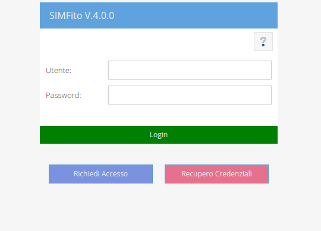

Per accedere a SIMFito basta aprire un brower (si raccomanda l'uso di Mozzilla Firefox o Google Chrome), digitare l'indirizzo, inserire il nome utente e la password, negli appositi campi del form di accesso, e cliccare sul pulsante Login.

Se le credenziali d'accesso sono state inserite correttamente (le credenziali sono case sensitive: c'è differenza, cioè, tra maiuscole e minuscole), dopo pochi istanti visualizzerete le vostre schede.